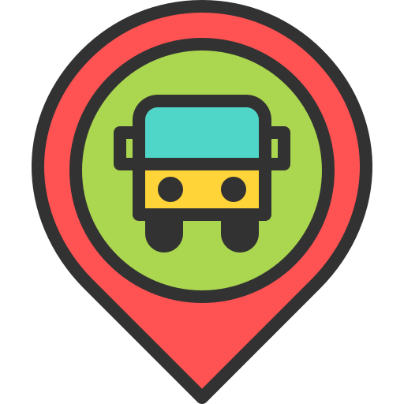

üìç Fretado Tracker ‚Äì Acompanhe seu fretado
Iniciar Rastreamento
Minha Posição
Posição do Fretado
 Fretado → Posição Atual
Usuário → Sua Posição
üîµ Linha azul → Trajeto Percorrido
Fretado não está transmitindo
 Usuário → Sua Posição
Usuário → Sua Posição